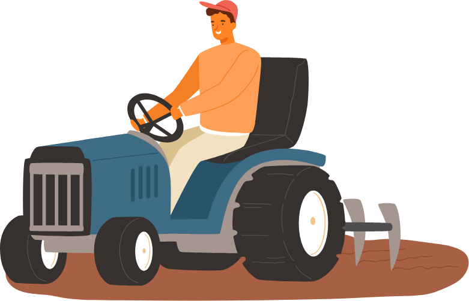

<dom-module id="auth-page">

    <template>
      <style>
          #bottom {
            height: 65px;
            width: 100%;
            text-align: center;
            position: absolute;
            bottom: 10vh;
          }

          #next {
              position: absolute;
              color: white;
              background: #3a593d;
              font-size: 18px;
              font-family: 'Roboto';
              left: 50%;
              padding: 15px;
              transform: translateX(-50%);
              bottom: 10%;
              width: 80%;
          }

          #middle {
            position: absolute;
            top: 30%;
            left: 50%;
            transform: translate(-50%, -50%);
          }

          #middle p {
              text-align: center;
          }

          .bold {
              font-weight: bold;
          }

      </style>
      <div id="middle">
          
          <p>Para iniciar tu programa de cultivo ingresa un número de 10 dígitos</p>
          
      </div>
      <button id="next" on-click="_next">Enviar</button>
    </template>
  
    <script>
      class AuthPage extends Polymer.Element {
  
        static get is() {
          return 'auth-page';
        }
  
        // Declare properties for the element's public API
        static get properties() {
          return {};
        }

        _next() {
          this.dispatchEvent(new CustomEvent("next-step-event",{composed:true,bubbles:true}));
        }
      }
      customElements.define(AuthPage.is, AuthPage);
    </script>
  </dom-module>